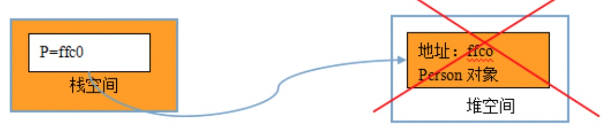
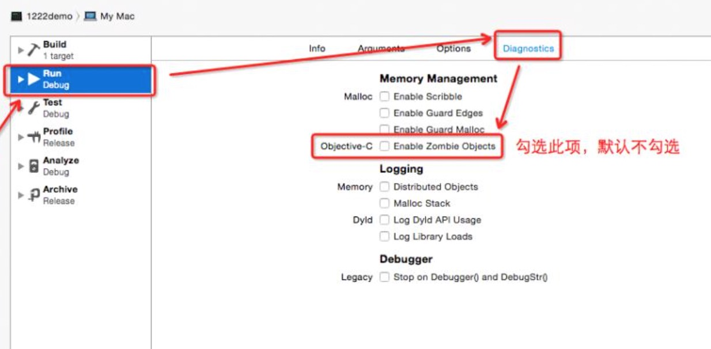
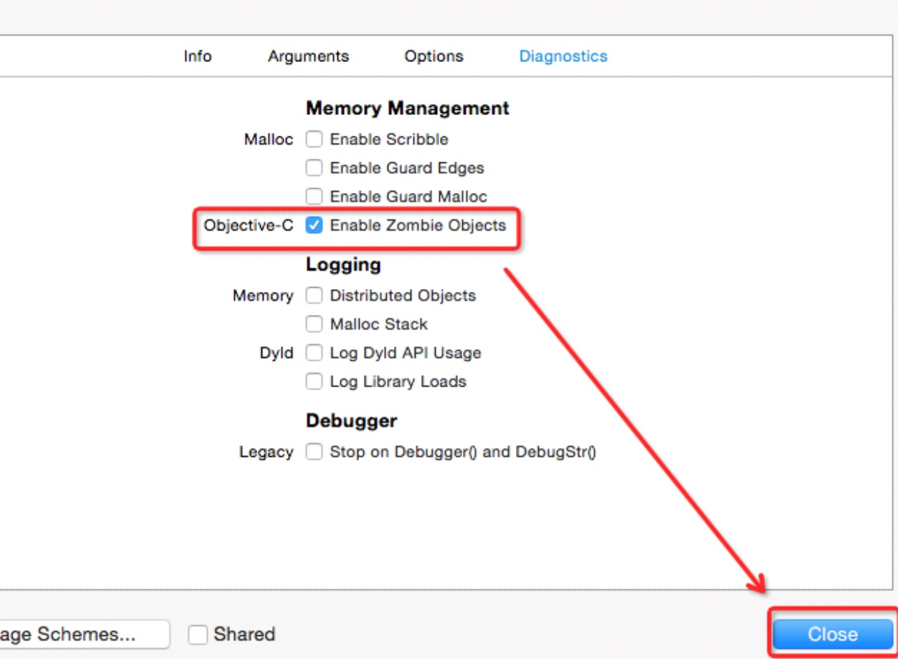
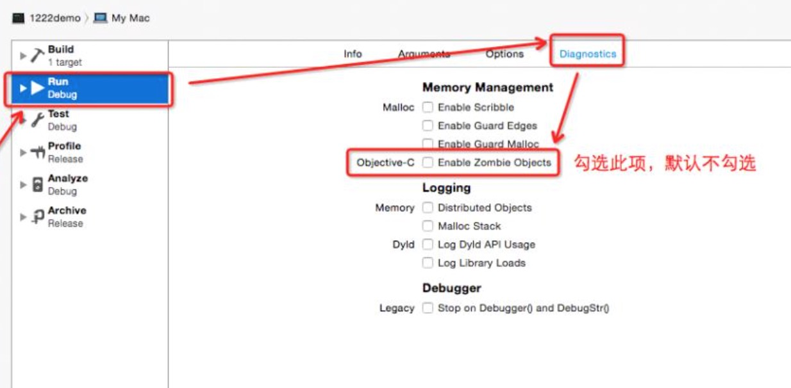
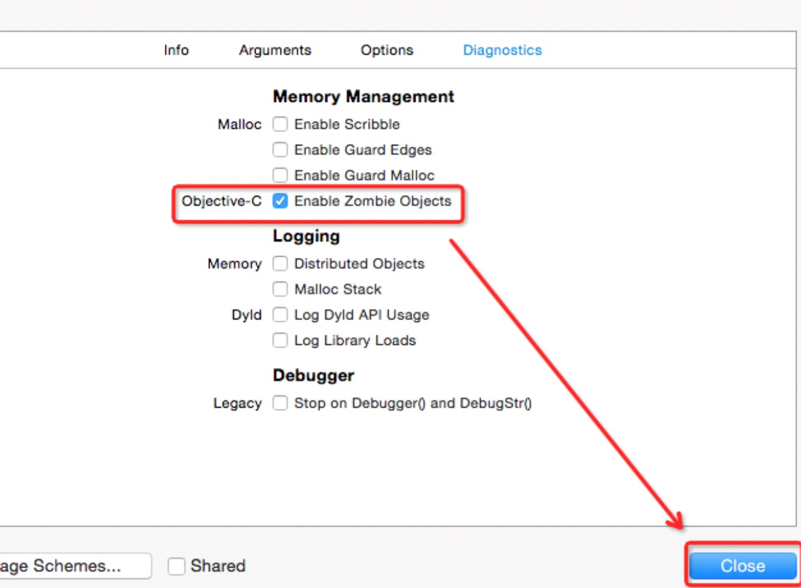
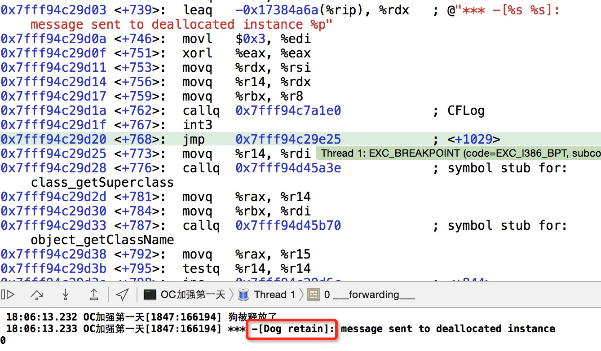

-
OC基础第一天
- 0.1. 【掌握】内存管理的基本概念及范围
- 0.2. 【理解】内管管理的原理及分类
- 0.3. 【掌握】手动内存管理快速入门
- 0.4. 【理解】内存管理的原则
- 0.5. 【掌握】单个对象内存管理（野指针）
- 0.6. 【掌握】单个对象内存管理
- 0.7. 【掌握】多个对象内存管理（野指针）
- 0.8. 【掌握】多个对象内存管理
- 0.9. 【掌握】set方法内存管理
- 0.10. 【掌握】@property参数（一）
- 0.11. 【掌握】@property参数（二）
- 0.12. 【理解】应用：电商App练习
- 0.13. 【理解】@class的使用
- 0.14. 【理解】循环retain问题
- 0.15. 【了解】NSString类的内存管理问题
- 0.16. 【掌握】autorelease基本使用
- 0.17. 【了解】内容总结
- Published with GitBook
5.【掌握】单个对象内存管理（野指针）
单个对象的野指针问题
思考：对象在堆区的空间已经释放了,还能再使用p吗?
Person *p = [[Person alloc] init]; [p release]; // 因为P已经被释放，此时调用p的run方法，此时会报错。 // 我们把p叫做野指针，把p指向的对象叫做僵尸对象。 [p run];野指针错误:访问了一块坏的内存(已经被回收的,不可用的内存)。
僵尸对象:所占内存已经被回收的对象,僵尸对象不能再被使用。(默认情况下xcode为了提高编码效率,不会时时检查僵尸对象,打开僵尸对象检测方法)

打开僵尸对象监测的方法
 


注意:
1> 空指针:没有指向任何东西的指针,给空指针发送消息不会报错.
关于nil和Nil及NULL的区别:
1.nil: A null pointer to an Objective-C object. ( #define nil ((id)0) )
- nil 是一个对象值。
- Person *p = [Person new];
- p = nil;
2.Nil: A null pointer to an Objective-C class.
- 如:Class someClass = Nil;给类对象赋值
3.NULL: A null pointer to anything else. ( #define NULL ((void *)0) )
- NULL是一个通用指针(泛型指针)。
4.NSNull: A class defines a singleton object used to represent null values in collection objects (which don't allow nil values).
- [NSNull null]: The singleton instance of NSNull。
- [NSNull null]是一个对象,他用在不能使用nil的场合。
2> 不能使用[p retain]让僵尸对象起死复生。 
- 3> 野指针操作